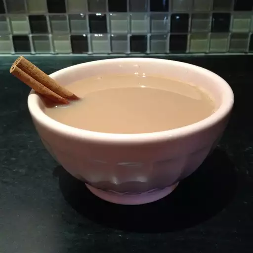

Vanilla Tea

Description
This Homemade Vanilla Tea Mix recipe is a delightful blend of sweetness, creaminess, and the exquisite aroma of vanilla, designed to offer you the perfect cup of tea. The mix combines the simplicity of unsweetened instant tea with the richness of nonfat dry milk powder and powdered non-dairy creamers. The star ingredient, vanilla, either in extract or bean powder form, infuses the tea with its luxurious and universally beloved flavor.
Crafted for convenience and consistent taste, this mix is ideal for those moments when you seek a soothing, warm beverage without the hassle of multiple ingredients or complicated steps. Its balanced sweetness, enhanced by the depth of vanilla, makes each sip a comforting experience. The recipe allows for customization, encouraging you to add your personal touch, be it a hint of spice, a swirl of whipped cream, or a drizzle of honey.
Store the mix in an airtight container to maintain its freshness and aroma. Whether it's a brisk morning, a quiet afternoon, or a relaxing evening, a cup of this homemade vanilla tea is all you need to unwind and indulge in a moment of serene pleasure. Enjoy the ease of preparation and the delightful taste that comes with every cup of this specially crafted tea mix.
Ingredients
- 2 cups white sugar
- 1 ½ cups unsweetened instant tea
- 1 cup nonfat dry milk powder
- 1 cup powdered non-dairy creamer
- 1 cup French vanilla flavored powdered non-dairy creamer
- 2 teaspoons pure vanilla extract (or vanilla bean powder for a dry mix)
Steps
- In a large mixing bowl, mix together the white sugar, unsweetened instant tea, nonfat dry milk powder, plain powdered non-dairy creamer, and French vanilla flavored powdered non-dairy creamer. These ingredients form the base of your vanilla tea mix.
- Incorporate the pure vanilla extract into the mixture. If you prefer a completely dry mix, use vanilla bean powder instead. This ingredient is key to giving your tea a rich and aromatic vanilla flavor.
- Use a whisk or a spoon to mix all the ingredients thoroughly. Ensure the vanilla is evenly distributed throughout the mixture to achieve a consistent flavor in each serving.
- For a smoother, finer texture, transfer the mixture to a blender or food processor. Pulse until it reaches a fine powder. This step is optional but recommended for a more refined tea experience.
- Place the finished vanilla tea mix in an airtight container. Store it in a cool, dry place. This mix will stay fresh for several months.
- To enjoy a cup of vanilla tea, stir 3 tablespoons of the mix into a cup of hot water. Adjust the quantity to suit your taste preferences.
- Feel free to add a personal touch to your vanilla tea. Consider topping it with a sprinkle of cinnamon, a dollop of whipped cream, or a drizzle of honey for added sweetness and flavor.
Indulge in the comforting and soothing flavors of your homemade vanilla tea, perfect for any time of day!
Back to main page